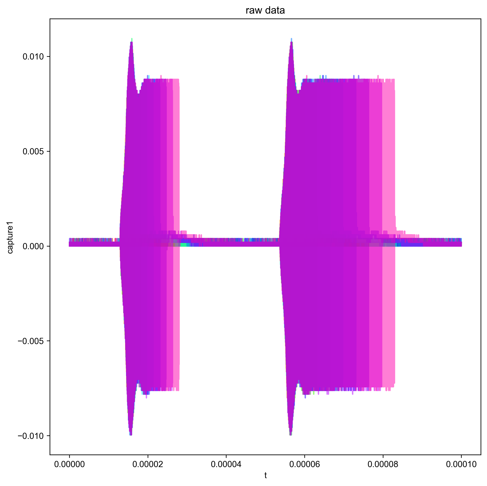
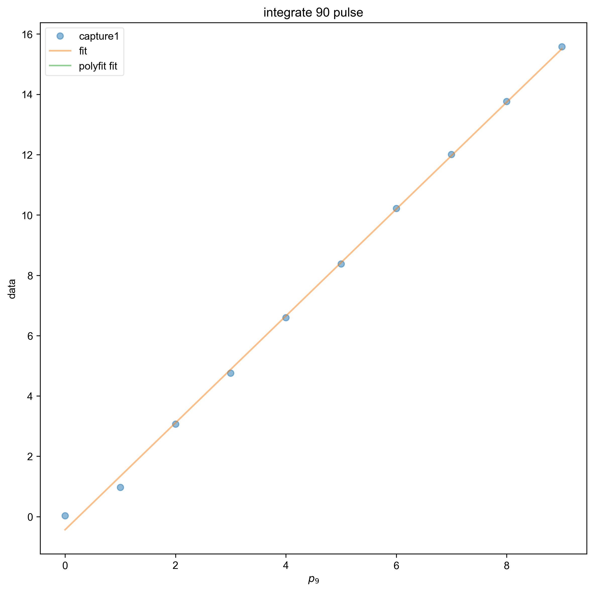
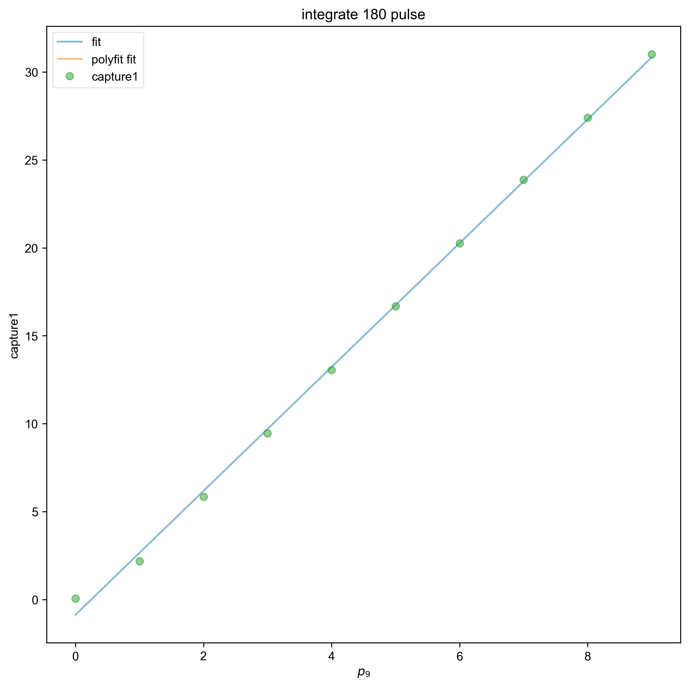

Note
Go to the end to download the full example code
Captured Nutation¶
Processes and visualizes the nutation pulse program that has been captured on a oscilloscope. Integrates the 90 and 180 pulse to show linearity.
- 


- 
- 
You didn't set units for p90 before saving the data!!!
You didn't set units for t before saving the data!!!
{\bf Warning:} You have no error associated with your plot, and I want to flag this for now
{\bf Warning:} You have no error associated with your plot, and I want to flag this for now
1: raw data |||(None, None)
2: freq domain |||(None, None)
3: analytic signal |||None
4: integrate 90 pulse |||None
5: integrate 180 pulse |||None
from pyspecdata import *
from pylab import *
from sympy import symbols, latex, Symbol
rcParams["image.aspect"] = "auto" # needed for sphinx gallery
# sphinx_gallery_thumbnail_number = 3
with figlist_var() as fl:
for (
filename,
folder_name,
nodename,
t_min,
t_max,
ninety_range,
oneeighty_range,
) in [
(
"210204_gds_p90_vary_3",
"nutation",
"capture1",
1.4e7,
1.6e7,
(1.237e-5, 3.09e-5),
(5.311e-5, 8.8e-5),
)
]:
d = find_file(filename, exp_type=folder_name, expno=nodename)
fl.next("raw data")
fl.plot(d)
d.ft("t", shift=True)
d = d["t":(0, None)] # toss negative frequencies
# multiply data by 2 because the equation
# 1/2a*exp(iwt)+aexp(-iwt) and the 2 negated the
# half. taken from analyze_square_refl.py
d *= 2
fl.next("freq domain")
fl.plot(d)
d["t":(None, t_min)] = 0
d["t":(t_max, None)] = 0
d.ift("t")
fl.next("analytic signal")
# {{{ plotting abs
# took out for loop and hard coding p90 times because only GDS parameters saved over
# the pp parameters
for j in range(len(d.getaxis("p90"))):
fl.plot(abs(d["p90", j]), alpha=0.5, linewidth=1)
# }}}
d = abs(d)
# {{{integrating 90 pulse and fitting to line
ninety_pulse = d["t":ninety_range]
ninety_pulse = ninety_pulse.sum("t")
fl.next("integrate 90 pulse")
line1, fit1 = ninety_pulse.polyfit(
"p90", order=1, force_y_intercept=None
)
fl.plot(ninety_pulse, "o")
f1 = fitdata(ninety_pulse)
m, b, p90 = symbols("m b p90", real=True)
f1.functional_form = m * p90 + b
f1.fit()
logger.info(strm("output:", f1.output()))
logger.info(strm("latex:", f1.latex()))
fl.plot(f1.eval(100), label="fit")
fl.plot(fit1, label="polyfit fit")
logger.info(strm("polyfit for 90 pulse output", line1))
# }}}
# {{{integrating 180 pulse and fitting to line
one_eightypulse = d["t":oneeighty_range]
one_eightypulse = one_eightypulse.sum("t")
fl.next("integrate 180 pulse")
line2, fit2 = one_eightypulse.polyfit(
"p90", order=1, force_y_intercept=None
)
f2 = fitdata(one_eightypulse)
m, b, p90 = symbols("m b p90", real=True)
f2.functional_form = m * p90 + b
f2.fit()
logger.info(strm("output:", f2.output()))
logger.info(strm("latex:", f2.latex()))
fl.plot(f2.eval(100), label="fit")
logger.info(strm("polyfit for 180 pulse:", line2))
fl.plot(fit2, label="polyfit fit")
fl.plot(one_eightypulse, "o")
# }}}
Total running time of the script: (0 minutes 8.048 seconds)